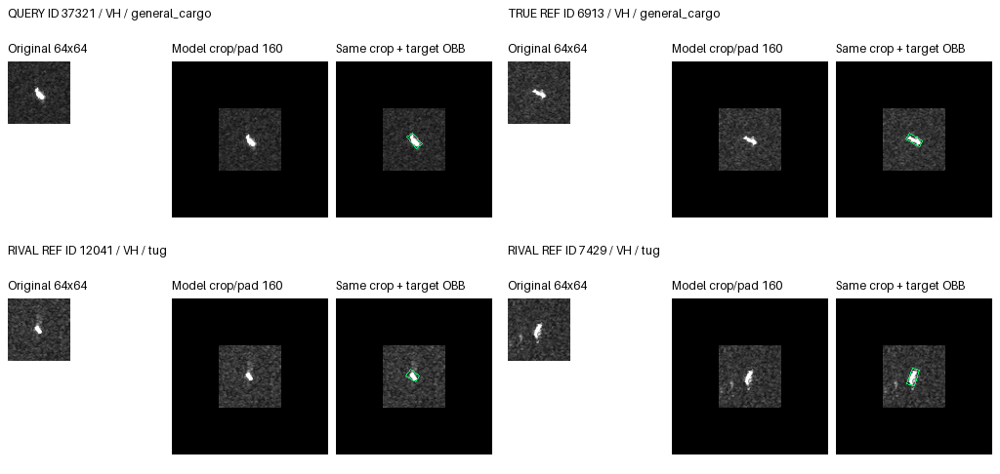
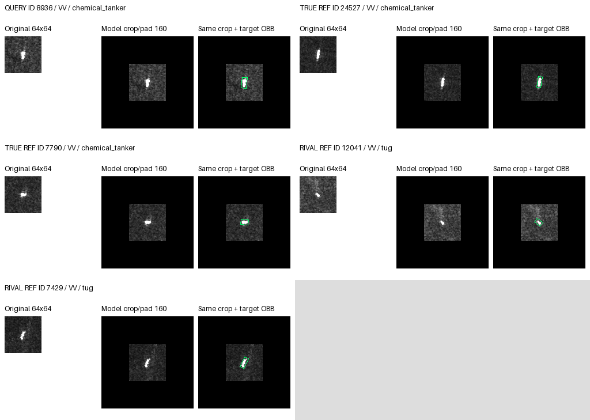
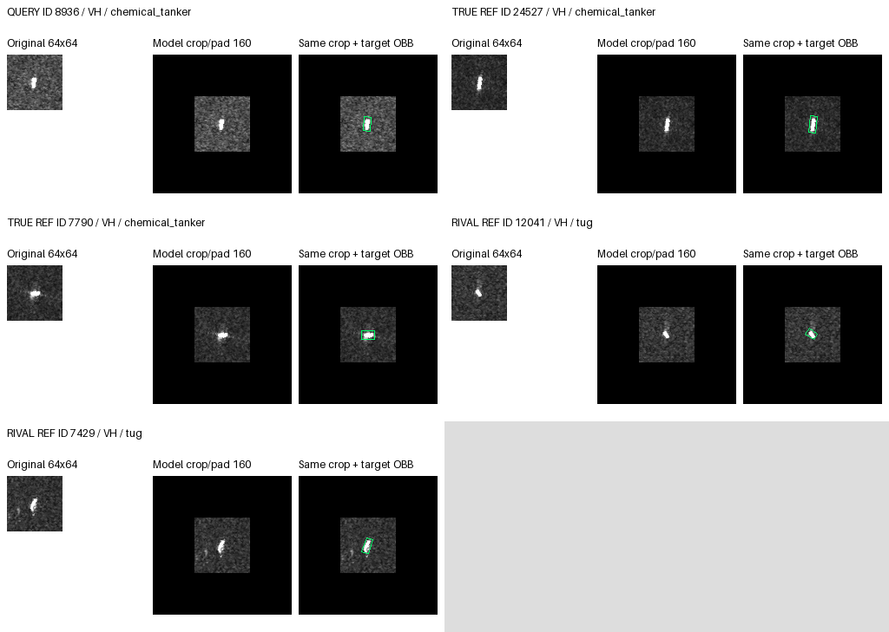
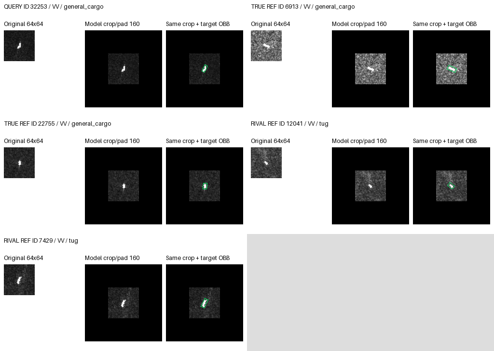
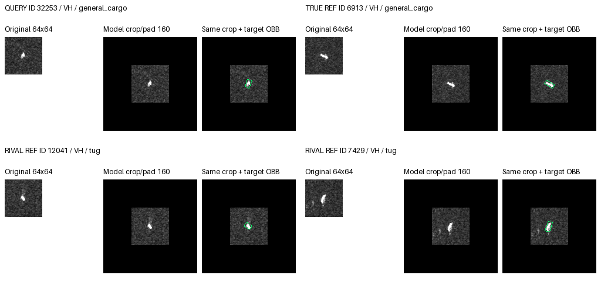

VV/VH separate; original pixels and exact crop/pad; separate OBB overlay. Rendered, not visually reviewed.
{
"arm": "hybrid",
"reference": "ce",
"seeds": [
17,
29,
43
],
"absent": [
{
"state": "harmed",
"state_events": 0,
"reason": "No events in this state."
}
],
"cases": 3,
"panels": 6,
"visual_status": "not_reviewed",
"rule": "One distinct query/state, ordered by state frequency, absolute fixed-rival margin change, ID, seed. No random sampling.",
"references": "Actual fixed reference manifest; exclude identical ID/MMSI; first two same/rival class entries in bank order. No resizing.",
"limitation": "Outcome-selected examples are not population proportions. Bank order is not learned attention ranking. No new per-reference attention trace or physical causal evidence."
}{
"id": "37321",
"label": 2,
"seed": 43,
"state": "rescued",
"old": 6,
"new": 2,
"changed": true,
"rival": 6,
"margin_change": 0.20145928859710693,
"arm": "hybrid",
"reference": "ce",
"state_orders": 1,
"dataset": "private",
"visual_status": "not_reviewed",
"class_name": "general_cargo",
"rival_name": "tug",
"mmsi": "677025200",
"pass_group": "S1A_060692_078D67",
"port": "Port Klang",
"orders": [
{
"seed": 17,
"saved_baseline": {
"prediction": 3,
"logits": [
-2.7029213905334473,
-3.278409004211426,
1.3370444774627686,
1.5150741338729858,
-4.748814105987549,
-6.5902299880981445,
0.0779242292046547,
-6.262409687042236
],
"truth_rival_margin": 1.2591202482581139
},
"ce": {
"prediction": 3,
"logits": [
-3.521669387817383,
-3.289973735809326,
0.9955979585647583,
1.157507061958313,
-4.766596794128418,
-6.91015100479126,
0.5762428641319275,
-5.05526876449585
],
"truth_rival_margin": 0.4193550944328308
},
"rank": {
"prediction": 3,
"logits": [
-2.786404609680176,
-3.203946590423584,
1.390567660331726,
1.5194554328918457,
-4.591800689697266,
-6.750133514404297,
-0.06773615628480911,
-6.09320068359375
],
"truth_rival_margin": 1.4583038166165352
},
"hybrid": {
"prediction": 3,
"logits": [
-3.4276576042175293,
-3.282912015914917,
1.0596903562545776,
1.2054808139801025,
-4.709561347961426,
-6.894781589508057,
0.4468519389629364,
-5.2196044921875
],
"truth_rival_margin": 0.6128384172916412
},
"state": "WW"
},
{
"seed": 29,
"saved_baseline": {
"prediction": 6,
"logits": [
-2.9458186626434326,
-2.9691624641418457,
0.9091553688049316,
1.4370249509811401,
-3.6670432090759277,
-4.334670543670654,
1.8666071891784668,
-6.297426223754883
],
"truth_rival_margin": -0.9574518203735352
},
"ce": {
"prediction": 6,
"logits": [
-3.603008508682251,
-3.14473819732666,
0.5178644061088562,
0.8679881691932678,
-3.783909559249878,
-4.574010848999023,
2.6867640018463135,
-5.180849075317383
],
"truth_rival_margin": -2.1688995957374573
},
"rank": {
"prediction": 3,
"logits": [
-2.767406940460205,
-2.9407591819763184,
1.0910061597824097,
1.503022313117981,
-3.5372679233551025,
-4.390544891357422,
1.443384051322937,
-6.393189430236816
],
"truth_rival_margin": -0.35237789154052734
},
"hybrid": {
"prediction": 6,
"logits": [
-3.4809556007385254,
-3.166975498199463,
0.6449081301689148,
0.9567416906356812,
-3.7120702266693115,
-4.537176609039307,
2.446422576904297,
-5.354968547821045
],
"truth_rival_margin": -1.801514446735382
},
"state": "WW"
},
{
"seed": 43,
"saved_baseline": {
"prediction": 2,
"logits": [
-2.7081339359283447,
-4.1176981925964355,
1.7977184057235718,
1.2471983432769775,
-4.287001132965088,
-5.223643779754639,
0.9547429084777832,
-6.477094650268555
],
"truth_rival_margin": 0.8429754972457886
},
"ce": {
"prediction": 6,
"logits": [
-3.3875882625579834,
-4.029111385345459,
1.2664576768875122,
1.1553683280944824,
-4.073192596435547,
-5.559942245483398,
1.3585772514343262,
-5.861103057861328
],
"truth_rival_margin": -0.09211957454681396
},
"rank": {
"prediction": 2,
"logits": [
-2.664067506790161,
-4.111395835876465,
1.8581286668777466,
1.3640048503875732,
-4.352875232696533,
-5.037351608276367,
0.5864030718803406,
-6.389411926269531
],
"truth_rival_margin": 1.271725594997406
},
"hybrid": {
"prediction": 2,
"logits": [
-3.334988832473755,
-4.02790641784668,
1.333530306816101,
1.1845386028289795,
-4.096282005310059,
-5.489504814147949,
1.224190592765808,
-5.903499603271484
],
"truth_rival_margin": 0.10933971405029297
},
"state": "rescued"
}
],
"panels": {
"vv": {
"file": "rescued_37321_vv.png",
"same_class_candidates": 2,
"rival_candidates": 2,
"shown_reference_ids": [
"6913",
"22755",
"12041",
"7429"
],
"query_available": true,
"same_class_usable": 2,
"rival_usable": 2
},
"vh": {
"file": "rescued_37321_vh.png",
"same_class_candidates": 1,
"rival_candidates": 2,
"shown_reference_ids": [
"6913",
"12041",
"7429"
],
"query_available": true,
"same_class_usable": 1,
"rival_usable": 2
}
},
"all_legal_reference_ids": [
"34478",
"31512",
"14814",
"16401",
"6913",
"22755",
"24527",
"7790",
"36308",
"23719",
"29922",
"2077",
"12041",
"7429",
"13000",
"13276"
]
}
{
"id": "8936",
"label": 3,
"seed": 29,
"state": "CC",
"old": 3,
"new": 3,
"changed": false,
"rival": 6,
"margin_change": 0.334713339805603,
"arm": "hybrid",
"reference": "ce",
"state_orders": 3,
"dataset": "private",
"visual_status": "not_reviewed",
"class_name": "chemical_tanker",
"rival_name": "tug",
"mmsi": "352003089",
"pass_group": "S1A_058688_074483",
"port": "Jebel Ali",
"orders": [
{
"seed": 17,
"saved_baseline": {
"prediction": 3,
"logits": [
-3.3464736938476562,
-1.464851975440979,
-0.13528954982757568,
2.9509029388427734,
-9.633913040161133,
-7.29257345199585,
1.3755570650100708,
-4.870317459106445
],
"truth_rival_margin": 1.5753458738327026
},
"ce": {
"prediction": 3,
"logits": [
-4.198674201965332,
-1.5494581460952759,
-0.5137008428573608,
2.6120524406433105,
-9.641385078430176,
-7.646378040313721,
1.9331034421920776,
-3.7761850357055664
],
"truth_rival_margin": 0.6789489984512329
},
"rank": {
"prediction": 3,
"logits": [
-3.4400992393493652,
-1.4005342721939087,
-0.12926927208900452,
3.0072107315063477,
-9.48829460144043,
-7.474067687988281,
1.3036866188049316,
-4.72367000579834
],
"truth_rival_margin": 1.703524112701416
},
"hybrid": {
"prediction": 3,
"logits": [
-4.103659629821777,
-1.517079472541809,
-0.4577538073062897,
2.6786909103393555,
-9.586058616638184,
-7.63029670715332,
1.8260833024978638,
-3.914402484893799
],
"truth_rival_margin": 0.8526076078414917
},
"state": "CC"
},
{
"seed": 29,
"saved_baseline": {
"prediction": 3,
"logits": [
-2.488356113433838,
-0.5402195453643799,
0.8094919323921204,
2.9723501205444336,
-7.633742332458496,
-4.242242813110352,
0.9734460115432739,
-5.1494975090026855
],
"truth_rival_margin": 1.9989041090011597
},
"ce": {
"prediction": 3,
"logits": [
-3.252903699874878,
-0.8178154826164246,
0.5138627290725708,
2.3572263717651367,
-7.644984245300293,
-4.4933180809021,
1.8376355171203613,
-4.087321758270264
],
"truth_rival_margin": 0.5195908546447754
},
"rank": {
"prediction": 3,
"logits": [
-2.3411526679992676,
-0.5147747993469238,
0.9471939206123352,
3.0635054111480713,
-7.490078449249268,
-4.283611297607422,
0.6185445189476013,
-5.27861213684082
],
"truth_rival_margin": 2.44496089220047
},
"hybrid": {
"prediction": 3,
"logits": [
-3.1246421337127686,
-0.8194049596786499,
0.6171249151229858,
2.4710257053375244,
-7.574230670928955,
-4.443116188049316,
1.616721510887146,
-4.263857841491699
],
"truth_rival_margin": 0.8543041944503784
},
"state": "CC"
},
{
"seed": 43,
"saved_baseline": {
"prediction": 3,
"logits": [
-3.1955349445343018,
-1.9890903234481812,
1.1141995191574097,
3.159688711166382,
-8.774145126342773,
-7.035186767578125,
1.0172209739685059,
-4.765674114227295
],
"truth_rival_margin": 2.142467737197876
},
"ce": {
"prediction": 3,
"logits": [
-3.890037775039673,
-1.914447546005249,
0.6318244934082031,
3.0819153785705566,
-8.610690116882324,
-7.382604598999023,
1.4264625310897827,
-4.191224575042725
],
"truth_rival_margin": 1.655452847480774
},
"rank": {
"prediction": 3,
"logits": [
-3.1926064491271973,
-2.0268585681915283,
1.1829583644866943,
3.2708775997161865,
-8.883877754211426,
-6.880365371704102,
0.7276663184165955,
-4.7457146644592285
],
"truth_rival_margin": 2.543211281299591
},
"hybrid": {
"prediction": 3,
"logits": [
-3.8501665592193604,
-1.921667456626892,
0.6885280609130859,
3.1135945320129395,
-8.647629737854004,
-7.320526599884033,
1.3160290718078613,
-4.250321388244629
],
"truth_rival_margin": 1.7975654602050781
},
"state": "CC"
}
],
"panels": {
"vv": {
"file": "CC_8936_vv.png",
"same_class_candidates": 2,
"rival_candidates": 2,
"shown_reference_ids": [
"24527",
"7790",
"12041",
"7429"
],
"query_available": true,
"same_class_usable": 2,
"rival_usable": 2
},
"vh": {
"file": "CC_8936_vh.png",
"same_class_candidates": 2,
"rival_candidates": 2,
"shown_reference_ids": [
"24527",
"7790",
"12041",
"7429"
],
"query_available": true,
"same_class_usable": 2,
"rival_usable": 2
}
},
"all_legal_reference_ids": [
"34478",
"31512",
"14814",
"16401",
"6913",
"22755",
"24527",
"7790",
"36308",
"23719",
"29922",
"2077",
"12041",
"7429",
"13000",
"13276"
]
}

{
"id": "32253",
"label": 2,
"seed": 29,
"state": "WW",
"old": 6,
"new": 6,
"changed": false,
"rival": 6,
"margin_change": 0.33735382556915283,
"arm": "hybrid",
"reference": "ce",
"state_orders": 3,
"dataset": "private",
"visual_status": "not_reviewed",
"class_name": "general_cargo",
"rival_name": "tug",
"mmsi": "620999328",
"pass_group": "S1A_058688_074483",
"port": "Jebel Ali",
"orders": [
{
"seed": 17,
"saved_baseline": {
"prediction": 3,
"logits": [
-0.6600582599639893,
0.9293868541717529,
-0.9911977052688599,
2.1390864849090576,
-5.393181324005127,
-6.730508804321289,
1.6937425136566162,
-3.1436984539031982
],
"truth_rival_margin": -2.684940218925476
},
"ce": {
"prediction": 6,
"logits": [
-1.4936338663101196,
0.745111882686615,
-1.2838209867477417,
1.773081660270691,
-5.375931739807129,
-7.025557994842529,
2.1048357486724854,
-2.1626076698303223
],
"truth_rival_margin": -3.388656735420227
},
"rank": {
"prediction": 3,
"logits": [
-0.7729423642158508,
0.9433852434158325,
-0.9105589389801025,
2.1432394981384277,
-5.213139533996582,
-6.889969348907471,
1.5701640844345093,
-3.0180397033691406
],
"truth_rival_margin": -2.480723023414612
},
"hybrid": {
"prediction": 6,
"logits": [
-1.4041357040405273,
0.7770969271659851,
-1.2155715227127075,
1.8247846364974976,
-5.314641952514648,
-7.019423007965088,
2.006418228149414,
-2.2868974208831787
],
"truth_rival_margin": -3.2219897508621216
},
"state": "WW"
},
{
"seed": 29,
"saved_baseline": {
"prediction": 6,
"logits": [
-1.9589283466339111,
1.6323083639144897,
-0.9234890341758728,
1.49083411693573,
-3.5744588375091553,
-4.112570762634277,
2.844740152359009,
-1.9816464185714722
],
"truth_rival_margin": -3.7682291865348816
},
"ce": {
"prediction": 6,
"logits": [
-2.681797981262207,
1.323967456817627,
-1.225723385810852,
0.8626235723495483,
-3.64574933052063,
-4.322210311889648,
3.575502634048462,
-1.0511670112609863
],
"truth_rival_margin": -4.801226019859314
},
"rank": {
"prediction": 6,
"logits": [
-1.8290711641311646,
1.6386630535125732,
-0.7316718697547913,
1.5628560781478882,
-3.437365770339966,
-4.148041725158691,
2.487421989440918,
-2.062321662902832
],
"truth_rival_margin": -3.2190938591957092
},
"hybrid": {
"prediction": 6,
"logits": [
-2.5545384883880615,
1.3345410823822021,
-1.1039059162139893,
0.972852885723114,
-3.57696270942688,
-4.287464618682861,
3.359966278076172,
-1.1937545537948608
],
"truth_rival_margin": -4.463872194290161
},
"state": "WW"
},
{
"seed": 43,
"saved_baseline": {
"prediction": 6,
"logits": [
-1.5341484546661377,
0.7723029851913452,
-0.7929680347442627,
1.7918964624404907,
-4.151963710784912,
-6.135517597198486,
1.959288477897644,
-3.125272035598755
],
"truth_rival_margin": -2.7522565126419067
},
"ce": {
"prediction": 6,
"logits": [
-2.2227671146392822,
0.8161189556121826,
-1.2663586139678955,
1.693555235862732,
-3.941843271255493,
-6.477653503417969,
2.308546781539917,
-2.6109983921051025
],
"truth_rival_margin": -3.5749053955078125
},
"rank": {
"prediction": 3,
"logits": [
-1.5461705923080444,
0.7114672660827637,
-0.6672488451004028,
1.918257474899292,
-4.243642807006836,
-5.917091369628906,
1.6025989055633545,
-3.0696046352386475
],
"truth_rival_margin": -2.2698477506637573
},
"hybrid": {
"prediction": 6,
"logits": [
-2.185145854949951,
0.8100374937057495,
-1.1913177967071533,
1.7311245203018188,
-3.970946788787842,
-6.4032301902771,
2.185204267501831,
-2.646078586578369
],
"truth_rival_margin": -3.3765220642089844
},
"state": "WW"
}
],
"panels": {
"vv": {
"file": "WW_32253_vv.png",
"same_class_candidates": 2,
"rival_candidates": 2,
"shown_reference_ids": [
"6913",
"22755",
"12041",
"7429"
],
"query_available": true,
"same_class_usable": 2,
"rival_usable": 2
},
"vh": {
"file": "WW_32253_vh.png",
"same_class_candidates": 1,
"rival_candidates": 2,
"shown_reference_ids": [
"6913",
"12041",
"7429"
],
"query_available": true,
"same_class_usable": 1,
"rival_usable": 2
}
},
"all_legal_reference_ids": [
"34478",
"31512",
"14814",
"16401",
"6913",
"22755",
"24527",
"7790",
"36308",
"23719",
"29922",
"2077",
"12041",
"7429",
"13000",
"13276"
]
}
